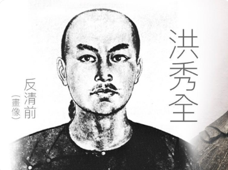
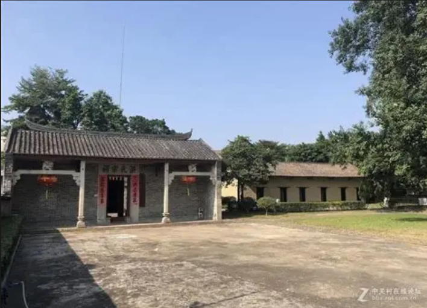
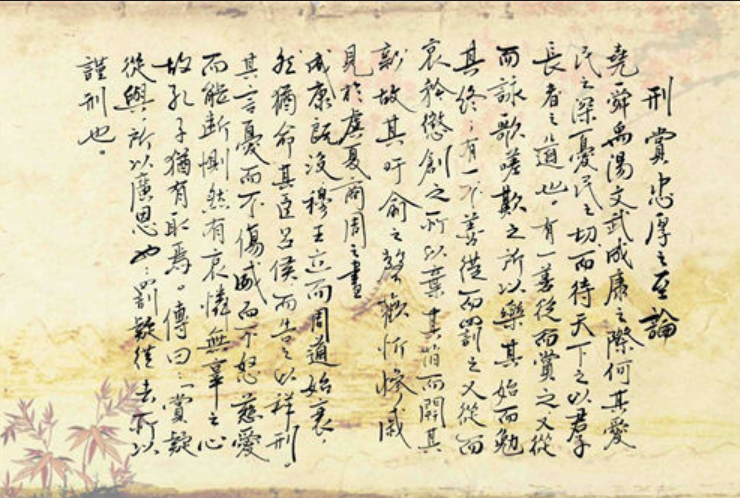
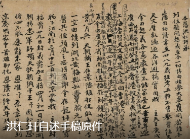
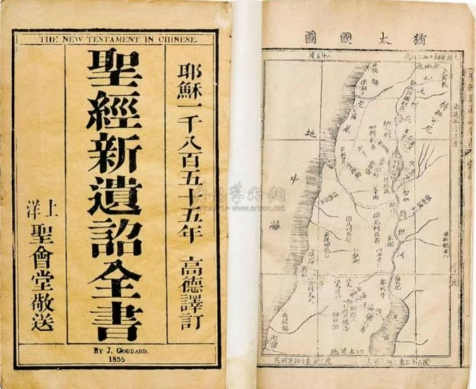

中国近代史 · 第一阶段 1827—1843
旧路断裂之后
科举挫败、丁酉异梦与宗教转向
他最初并不是宗教领袖，而是把人生希望押在科举上的乡村读书人。四次落榜、一场大病、一本被忽略六年的布道书——当旧路走不通，他用自己的梦重新解释了失败，也重新解释了世界。
1827 · 县试成绩不错
1836 · 广州得《劝世良言》
1843 · 转向拜上帝
开场先把问题抛出来：洪秀全最初并不是宗教领袖，而是一个把人生希望押在科举上的乡村读书人。
接下来用四个年份串起这一阶段：1827 年县试成绩不错；1836 年在广州得到《劝世良言》，当时并未在意；1837 年第三次落榜后大病一场，出现“丁酉异梦”；1843 年第四次落榜，他重读那本书，转向拜上帝。
一句话可以概括这一阶段：**外部道路失败，内部意义重构。**
时间轴 · 一次身份改写
四个年份，完成一次身份改写
从相信科举，到被科举拒绝，再到用宗教解释自己的失败——这条线索由四个年份钉住。
外部道路失败，内部意义重构。

青年洪秀全 · 后世据史料想象绘制
四个年份把整条线索钉住。1827 年县试成绩不错，他还相信科举可以改变命运；1836 年拿到《劝世良言》时并未重视；1837 年落榜后大病、异梦，先留下一个模糊的自我解释；1843 年最后一次落榜，他重读那本书，把六年前的梦整理成宗教使命。
**外部道路失败，内部意义重构**——这是本阶段的主轴。
壹
第一部分 · 1827—1843
科举之路：屡试不第
寒窗苦读的起点，也是后来转向的起点。

洪秀全故居 · 广东花县官禄㘵村
这处农家院落是洪秀全出生、读书的地方，也是他第一次赴考之前“寒窗”岁月的全部世界。他一边做塾师、一边备考，把改变命运的希望全押在科举上。
故居至今仍保存。它是起点，也是后来所有选择的参照物——正是一次次失败，才有了后来的转向。
进入第一部分：科举之路。
这处农家院落是洪秀全出生、读书的地方，也是他第一次赴考之前“寒窗”岁月的全部世界。他一边做塾师、一边备考，把改变命运的希望全押在科举上。
要提醒的是：他的起点与当时千千万万农家子弟并无不同。正是这条路上反复的失败，才有了后来的转向。
一、科举之路
一道始终跨不过去的门槛
县试顺遂之后，府试成为他十几年都未能越过的关口。
1843 年的失败，不再只是一次落榜，而是科举梦的终结。
14 岁时，洪秀全参加县试，成绩不错；但紧接着的府试（考秀才的正式关卡）落榜，此后府试成了他难以跨越的障碍。
十几年间，他一边做塾师一边备考，至少四次赴广州应试，结果全部名落孙山。1843 年，31 岁的他抱着最后希望再次赴考，依然失败。
**这次失败，不再只是一次落榜，而是他科举梦的终结。**

手书文章残页 · 抄录苏轼《刑赏忠厚之至论》
“赏疑从与，所以广恩也；罚疑从去，所以谨刑也。”苏轼《刑赏忠厚之至论》，见洪秀全手书残页
这不是一个“反儒”者的起点。它证明他曾认真接受儒家治道与科场作文训练。
投入越深，失败的冲击越重。日后才会出现与孔孟之书决裂的姿态。
这份手迹抄录的是苏轼《刑赏忠厚之至论》中“赏疑从与，所以广恩也；罚疑从去，所以谨刑也”一段，是他熟读经史、按科场标准作文的直接痕迹。
他早年认同的正是这种“忠厚”的儒家治道。也正因投入太深，屡试不第的打击才格外沉重，日后才会愤而弃孔孟之书。
一、科举之路 · 史料二
“屡试不售”并非后人的附会

洪仁玕自述手稿原件 · 馆藏档案影印
“自此时至三十一岁，每场榜名高列，惟道试不售，多有抱恨。”洪仁玕自述手稿
三类立场不同的材料，在这一点上互相印证。
这份手稿上写着：“自此时至三十一岁，每场榜名高列，惟道试不售，多有抱恨。”
同族好友洪仁玕的这份记录，与张德坚《贼情汇纂》“屡试不售……心怀怨愤”、李秀成自述“久困场屋”互相印证：**科场失败并非后人附会，而是他人生转向的真实起点。**
注意：三类材料的立场完全不同，却在这一点上一致，可信度比单一材料高。
贰
第二部分 · 1837
大病与“异梦”
第三次落榜之后，他在病中看见了一个后来被反复解释的梦。
他卧床四十余天，高烧、神志不清，出现“斩妖”的幻觉和飞升见“天父”的梦境。
当时并未被重视。但六年后，这个梦获得了完整的解释。
第二部分：1837 年的大病与“异梦”。
第三次落榜后，洪秀全深受刺激，回家后大病一场，卧床四十多天。材料描述他高烧、神志不清，出现“斩妖”幻觉和飞升见“天父”的梦境。
要强调一点：**异梦当时并没有立即变成成熟教义。**它更像一颗种子，要等到 1843 年重读《劝世良言》之后，才被整理成完整的神圣叙事。
“世间之人皆我所生，却忘恩拜偶像，你可下去斩除妖魔。”韩山文《太平天国起义记》所记异梦
梦里的场景，正好为他的处境提供了一套解释：失败不是终点，而是被选中的人必经的考验。
把这一页看成一个心理链条：**落榜是现实打击，大病让日常秩序中断，高烧中的幻觉把压抑与愤懑转化为“斩妖、见天父”的场景，最后形成一个使命叙事的雏形。**
韩山文《太平天国起义记》里记下了这个梦：天使迎他升天，入一大殿，见一老者，金须黑袍，坐于高位，要他从天下去斩除妖魔。
但请记住：这套解释在 1837 年还没有成形，它要等到 1843 年才被拼装完整。
二、心理冲击 · 史料三
一本被忽略的书，六年后成为答案
 《劝世良言》· 梁发著
《劝世良言》· 梁发著
1836
广州应试时得到此书
当时只是随手翻阅，并未在意。
1843
第四次落榜后重新翻读
书中的“爷火华”上帝，与他梦中的老者被他视为“吻合”。
《劝世良言》由街头布道书，变成验证异梦的凭据。
1836 年洪秀全在广州应试时得到梁发的《劝世良言》，当时只是随手翻阅，并未在意。
1843 年最后一次落榜后，他重读此书，发现书中的“爷火华”上帝竟与梦中的老者“吻合”。
研究指出，《劝世良言》因此成为他验证异梦真伪的重要凭据，也是他释梦的主要理论根据之一。**一本街头布道书，从此变成了他的答案。**
叁
第三部分 · 1843
从“孔孟信徒”到“拜上帝”
他原本相信的
科举取士 · 儒家治道 · 清朝功名
价值由朝廷认可
他后来相信的
异梦验证 · 上帝使命 · 自我赋权
价值来自神圣启示
1843：传统功名体系失去解释力。
第三部分：从“孔孟信徒”到“拜上帝”。
1843 年是身份改写的完成点。洪秀全不再把失败理解为个人学业或运气问题，而是把旧的功名体系整体判为无效。
他随后以异梦、上帝和使命重新解释自己：**从一个等待朝廷认可的读书人，转向自行赋予权威的宗教领袖。**
三、宗教转向
最后一次落榜后，他改写了“成功”的定义
“不考清朝试，
不穿清朝服，
要自己来开科取士。”洪秀全决裂时的强烈表达
关键不是情绪，而是权威来源变了：从“朝廷承认”变成“上帝授予”。
材料保留了洪秀全决裂时的强烈表达：“不考清朝试，不穿清朝服，要自己来开科取士。”
这句话的关键不是情绪，而是**权威来源发生了变化**：过去他等待清朝科举承认自己；现在他把异梦解释成神谕，把失败解释成使命的前兆，转而声称权威来自上帝。
这就是本阶段最重要的一次改写。

《圣经·新遗诏全书》· 1855 年高德译订本
末世征战、善恶对立与天国降临的叙事，被装进他的梦与使命。
一个失意的读书人，就这样用外来宗教重新解释了自己的人生遭遇。
在《劝世良言》之后，洪秀全又研读《圣经》，并在《启示录》上写下批注，留下《钦定旧前遗诏圣书批解》。
末世征战、善恶对立、天国降临的叙事，被装进他的梦与使命：**上帝是父亲，耶稣是兄长，他是“次子”。**
一个失意的读书人，就这样用外来宗教重新解释自己的人生遭遇，并在 1843 年前后创立了后世所称的拜上帝会。
内在需要
挫败、不甘与自我价值失落需要一个新的意义解释
宗教文本
《劝世良言》与《启示录》提供上帝、斩妖与天国叙事
宗教领袖
三股力量交汇，他才从一个传统读书人，转向宗教领袖。
洪秀全的转向不能只归因于一本书，也不能只归因于一次梦。
**外部**是科举道路反复失败；**内部**是挫败之后重建自我价值的需要；**宗教文本**则提供了一套现成可用的语言和叙事。
三股力量交汇，他才从一个传统读书人转向宗教领袖。这个结论来自你提供的评价总结。
反抗旧秩序 却未能跳出旧式思想
- 01
科举失败切断了他原本相信的人生道路。四次落榜，晚清僵化的科举制度阻断了底层读书人的上升通道。
- 02
异梦让挫败第一次获得神圣解释。病中的幻觉，被后来的他整理成使命。
- 03
宗教文本把个人危机改写为救世使命。《劝世良言》与《启示录》提供了现成的语言。
- 04
这种选择能够动员反抗，也带着旧式思想的桎梏。它可以奋起反抗旧秩序，却难以跳出旧式思想本身。
下一阶段要回答的问题：一套宗教组织，如何走向政治动员，又如何在权力中变形。
 1814—1864 · 广东花县 → 天京
1814—1864 · 广东花县 → 天京
收束时不要把洪秀全简单解释为受骗或迷信。他的选择有清晰的心理与时代路径：**科举失败切断旧路，异梦留下新的自我解释，宗教文本又把个人危机改写成救世使命。**
这种思想能够组织反抗，却也无法跳出旧式思想的框架——这是农民阶级的局限，也是这一阶段留给下一阶段的问题。
接下来我们进入下一个板块，看看洪秀全是如何从一个革命领袖逐步变为封建帝王的。